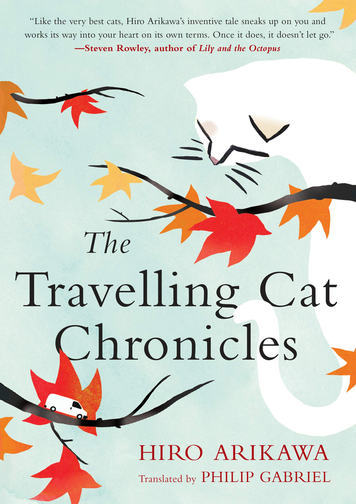
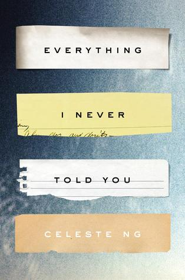
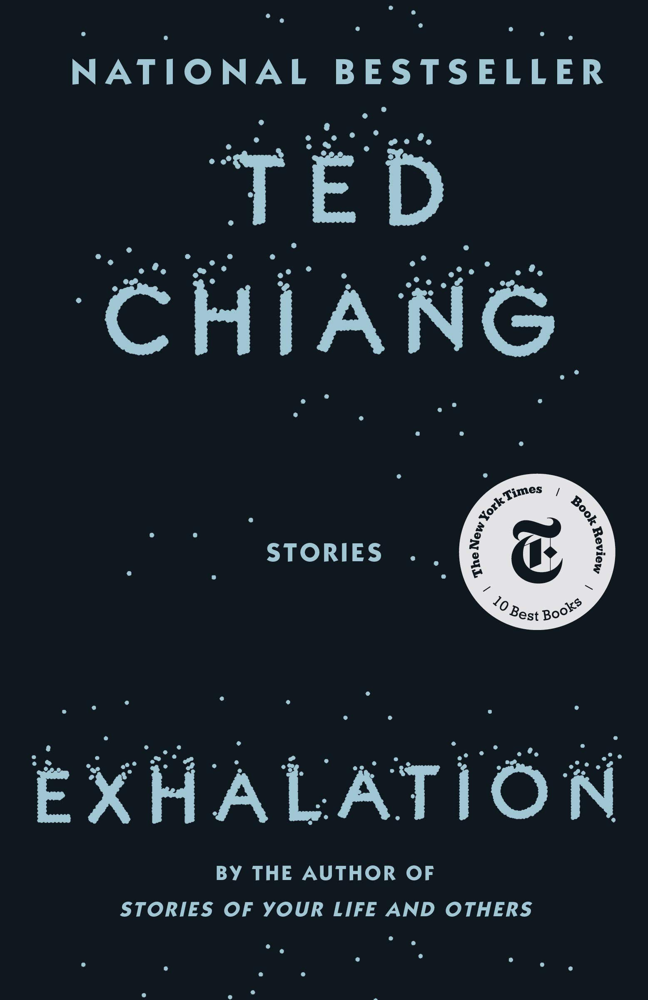
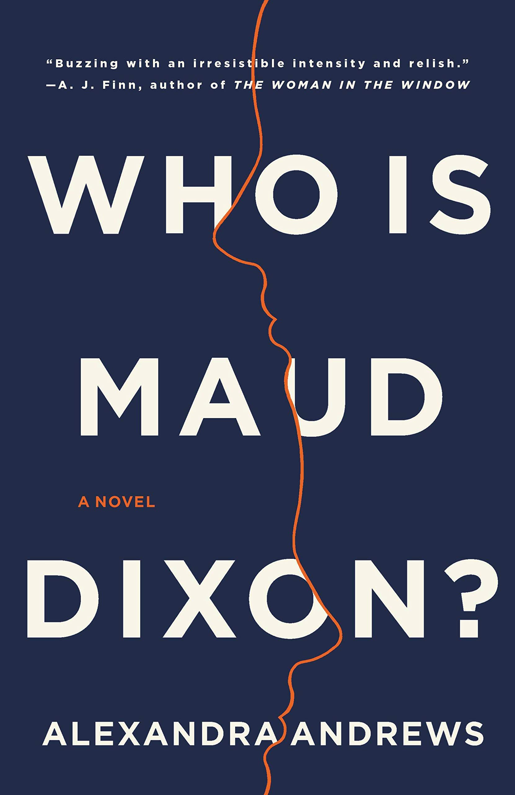
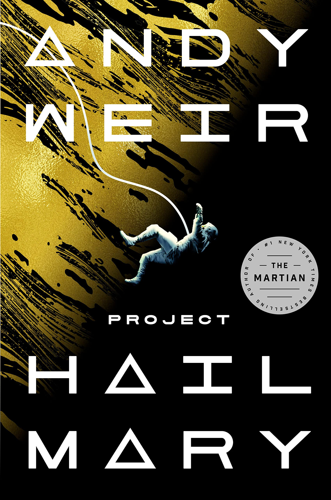

Recent Reads:






Hello! Thank you for looking through my portfolio.
I'm a UX Designer interested in exploring the human experience and story from a variety of perspectives, including Cognitive Science, Design, and Fiction.
Currently, I'm a junior at Brown University studying Cognitive Science with a focus in visual perception. I'm working at the Welch Lab investigating the perceptual preference for the compositional rule of thirds, and designing at Band of Hands, an HR startup working to make flexible work easier.
I'm from San Diego, California and in addition to art and design, I love reading and all things outdoors. I'm on Brown's Club Tennis team and you can find me hiking, climbing or even slack-lining anytime it's sunny out.